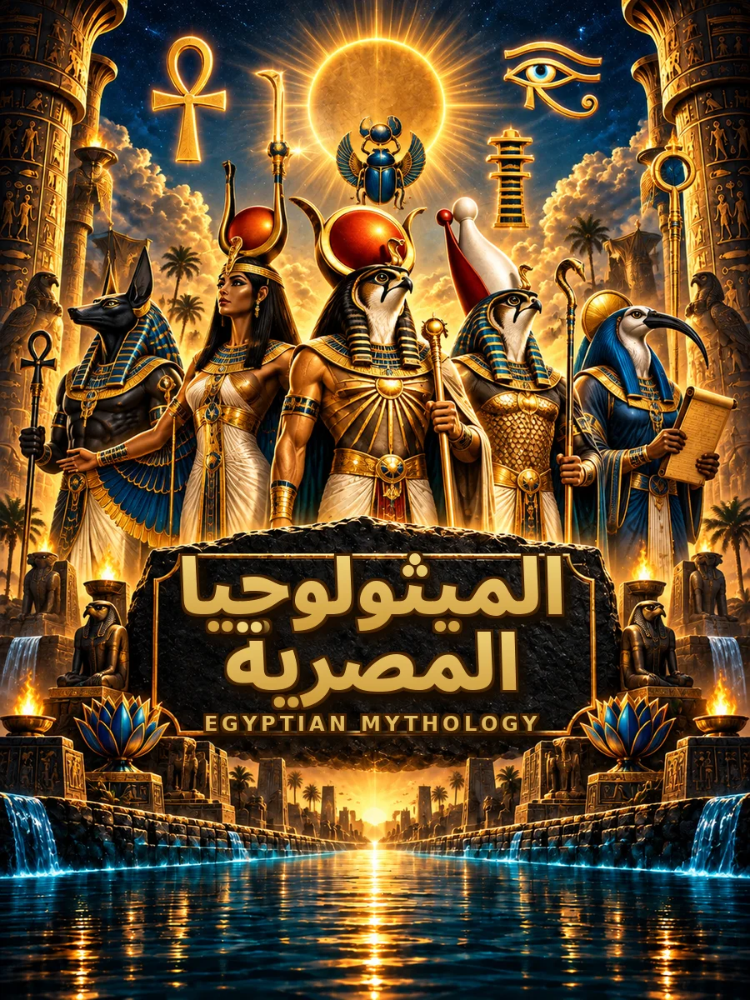
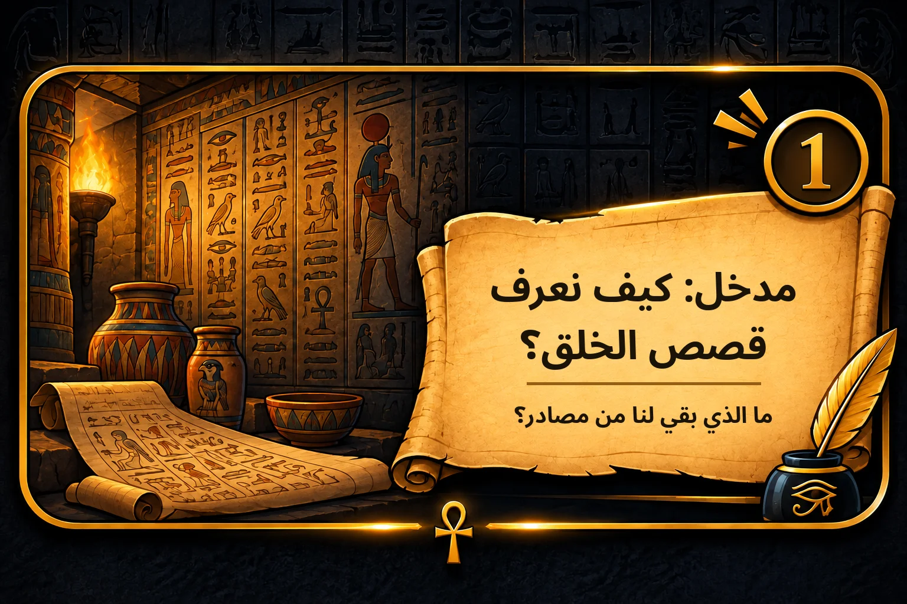
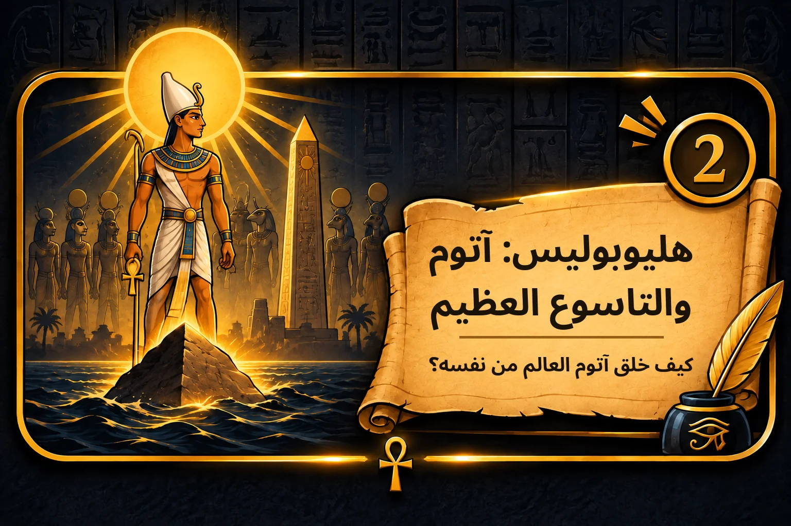
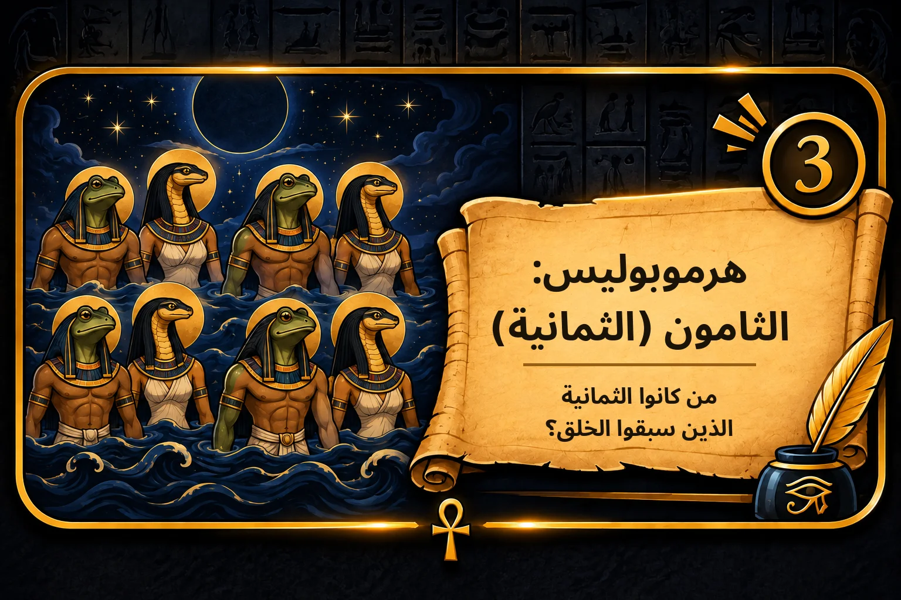
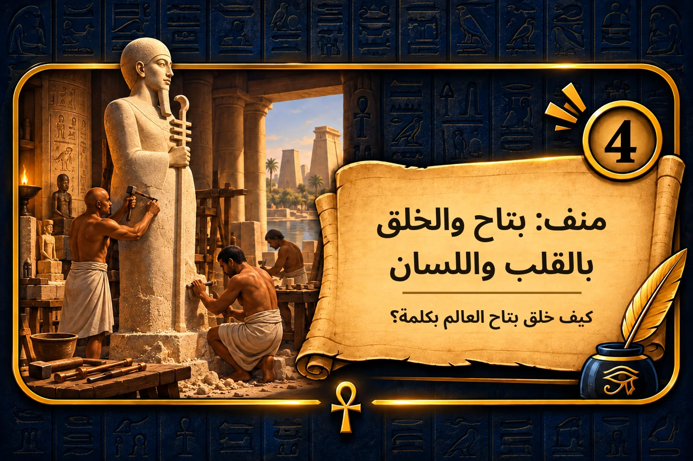
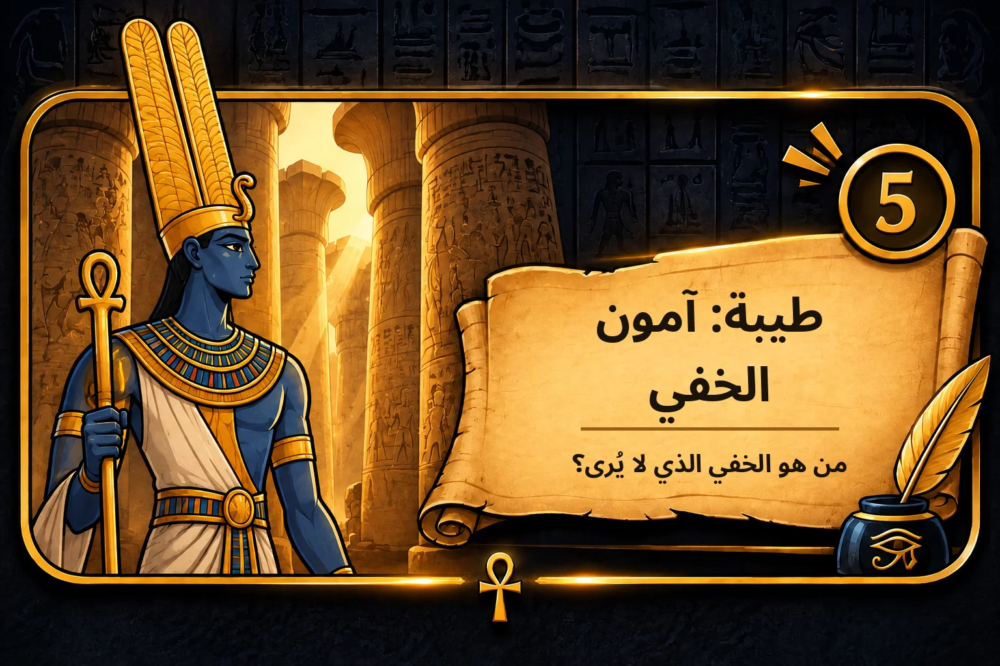
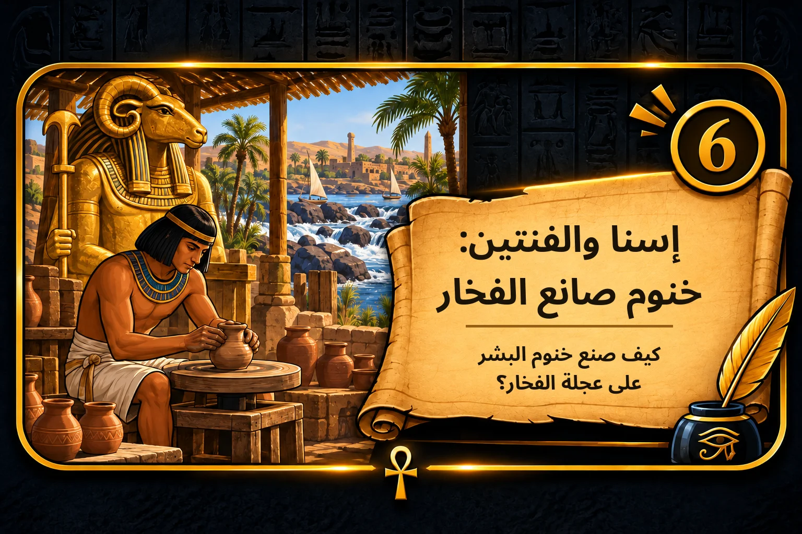
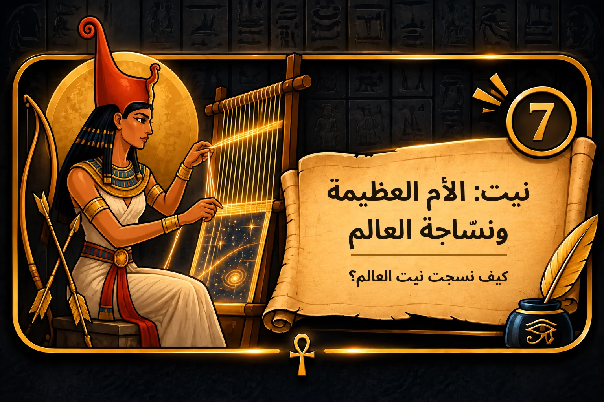
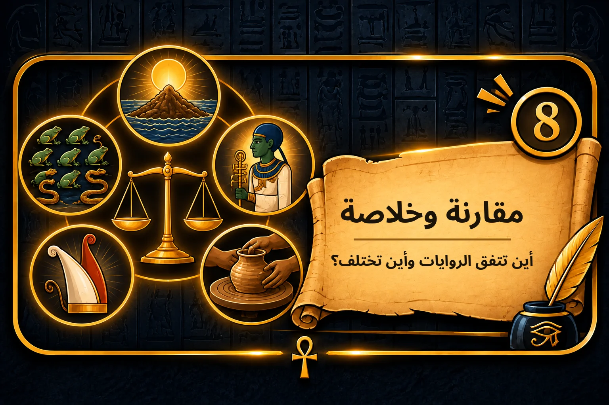
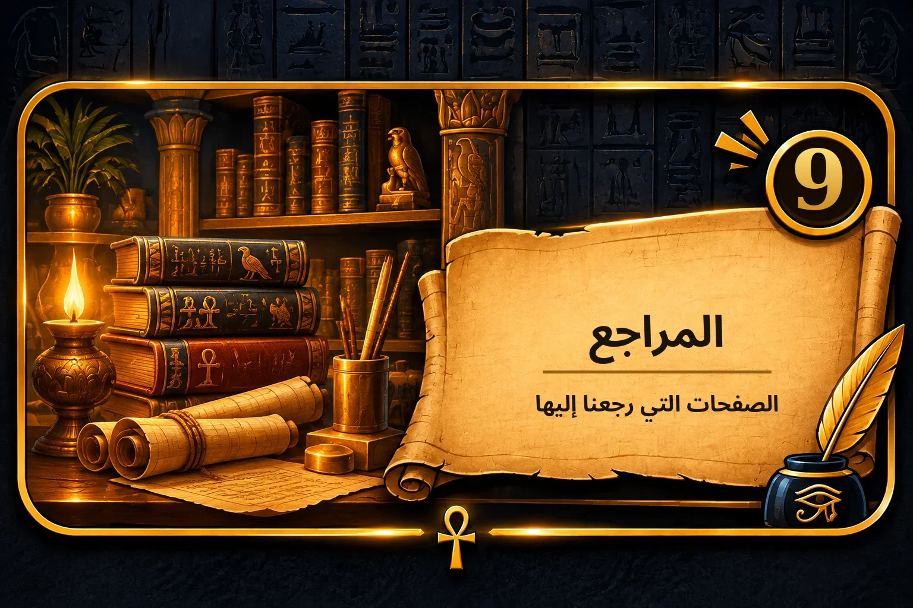

الميثولوجيا المصرية
ثماني روايات مصرية لبدء الكون، لكل مركز ديني روايته، ولكل رأي صاحبه ومصدره.

1مدخل: كيف نعرف قصص الخلق؟
ما الذي نملكه من مصادر
أقدم نصوص دينية مدوّنة نملكها هي متون الأهرام، التي سُجّلت أول مرة على جدران هرم الملك أوناس، آخر ملوك الأسرة الخامسة، ثم في أهرامات ملوك الأسرة السادسة وزوجاتهم في سقارة. ويؤكد عبد الحليم نور الدين أن تسجيلها في عهد أوناس لا يعني أنها نتاج عهده، بل هي نتاج الفكر الديني المصري منذ أقدم العصور، وأنها لا تتسم بالتجانس، فقد تحمل أفكارًا متناقضة أحيانًا، صادرة من أزمنة سحيقة وأماكن مختلفة.[1]
ويصف عبد العزيز صالح ما في هذه المتون من مادة عن الخلق: فقد ظهرت فيها «تصورات كبار المفكرين عن الخلق الأول ونشأة الوجود، والعلاقات بين أرباب التاسوع الأكبر، لاسيما أتوم وجب وأوزير وست وإيسة، فضلًا عن حور ورع». ويزيد عدد فقرات المتون عند اكتمالها على سبعمائة فقرة.[2]
لكن أدولف إرمان ينبّه إلى أن مصر لم تترك لنا كتبًا قصصية تروي الأساطير؛ فكل ما نعرفه يأتي من تلميحات متفرقة مثل «في يوم كذا... في ليلة كذا...»، ومن التعاويذ السحرية التي تستند إلى أفعال المعبودات، ومن نقوش العصور المتأخرة، ومن كتابات بلوتارخ عن إيزيس وأوزير. ويرى أنه ربما لم توجد أصلًا كتب أسطورية، لأن الحكايات كانت معروفة للجميع وتنتقل مشافهة من جيل إلى جيل.[9]
ويشير مقال بريتانيكا إلى أن الأساطير «معروفة معرفة ضعيفة»: فالخطاب الديني سُجّل في الترانيم والطقوس ومشاهد المعابد والنصوص المتخصصة، ونادرًا في سرد قصصي. ويضيف أن ندرة السرد لا تعني أن الأساطير لم تكن موجودة، وأن بعضها قد يرجع إلى العصر العتيق (نحو 3000 ق.م).[16]
وتنبّه د. إيمي كالفرت إلى أن دراسة الأساطير المصرية تواجه فجوات كبيرة بسبب ما بقي وما لم يبقَ، وأن أكمل السجلات نصوص من عصور متأخرة تعرض روايات تبدو متناقضة.[17]
ويلخّص بريت ماكلين في موسوعة UCLA موقف المصادر: نظريات الخلق المتأخرة لم تنقطع قط عن القديمة، بل تطورت منها تطورًا مستمرًا حتى العصر الروماني. وينقل عن الباحث ديرشان رأيه أن تقديم نظريات الخلق على أنها تطور تاريخي متتابع أمر يكاد يكون مستحيلًا، وأن المنهج الأنسب هو التصنيف حسب النوع لا حسب الزمن.[7]
العناصر المشتركة بين الروايات
تتفق الروايات على أن العالم بدأ من مياه أولى هامدة اسمها «نون». ويقول إرمان: «في البدء لم يوجد إلا الخواء، نون، المياه الأولى». ويضيف بادج أن المصريين آمنوا في العصور الأولى بوجود كتلة مائية عميقة بلا حدود خرجت منها السماء والأرض وكل ما فيهما، وأن جراثيم كل حياة كانت كامنة فيها منذ البدء، وأن نون صار يُطابق في العصور المتأخرة أحيانًا مع السماء وأحيانًا مع المحيط والنيل.[9][10]
وتتفق الروايات على تل أول ظهر من المياه، وعلى حجر هرمي الشكل هو «البنبن». ويذكر عبد الحليم نور الدين أن معبود الشمس وقف عند ظهوره على التل الأزلي فوق حجر هرمي الشكل صار رمزًا مقدسًا لمعبود عين شمس، وأن قمم المسلات في الدولة الحديثة اتخذت الشكل الهرمي نفسه تمجيدًا للمعبود رع.[1]
وترتبط الشمس بالخلق في كل الروايات: فالشمس الوليدة تظهر باسم رع أو باسم خبري، وتتنوع صور ظهورها بين طفل يجلس على زهرة لوتس نبتت من المياه، وبين معبود يفقس من بيضة على التل، وبين كائن يمتطي ظهر بقرة سماوية يعبر بها الماء كما في رواية الأشمونين.[9]
ويرى سليم حسن أن المصري كان يفكر في دائرة المحسوس لا المجرد، فجسّم معبوداته واتخذ لها من الحيوان والكائنات مظاهر يقدسها، مع اعتقاده بالوحدانية في الوقت نفسه.[4]
المراحل السبع للتاريخ الأسطوري
تعرض كالفرت الخط الزمني الأسطوري كما رآه المصريون في سبع مراحل: الفوضى قبل الخلق؛ ظهور المعبود الخالق؛ خلق العالم وتمايز الكائنات؛ حكم المعبود الشمس؛ حكم معبودين آخرين مباشرة؛ حكم الملوك البشر؛ ثم العودة إلى فوضى المياه الأولى.[17]
وترى أن الزمن عند المصريين كان خطيًا ودوريًا معًا، وأن دورة التحلل والموت والبعث هي ما ضمن ثبات الكون.[17]
مراكز الخلق وعلاقتها ببعضها
ارتبطت كل رواية بعبادة معبود في مدينة كبرى: عين شمس (هليوبوليس) والأشمونين (هرموبوليس) ومنف وطيبة. ويقول إرمان: «في كل إقليم كانت الحكاية تأخذ شكلًا يعطي الدور الأبرز للمعبود المحلي المفضل».[9]
وتؤكد كالفرت أن الروايات الكبرى الثلاث (هرموبوليس وهليوبوليس ومنف) تتشابه في منهجها: كتلة مائية فوضوية تحمل الإمكان تُضبط بإقامة ماعت وتُعطى شكلًا بإرادة الخالق، وأن وجودها معًا دون صراع ظاهر يدل على تعقيد العالم الأسطوري.[17]
كالفرت (Smarthistory)
قد تكون الاختلافات ناتجة عن محاولات دمج معبودين ظهروا في أزمنة وأماكن مختلفة داخل إطار قائم لقصص الخلق.
المصدر: Smarthistory: Creation myths and form(s) of the gods in ancient Egypt
بريتانيكا (بينز ودورمان)
اكتسبت المعبودات الرئيسية كلها صفات الخالق، فلم تكن الشخصيات الإلهية الكبرى محددة تحديدًا صارمًا، وكان التداخل بينها كبيرًا.
المصدر: Britannica: Ancient Egyptian religion
بريستد (1912)
انتهجت كبريات المعابد وكاهنوها أن تجعل من معبودها المحلي مركزًا لعملية توحيد تدريجية جذبت إليها معبودات المدن كلها داخل اللاهوت الشمسي، لكن المكانة السياسية للمعبود الشمس حسمت النتيجة لصالحه.
المصدر: J.H. Breasted, Development of Religion and Thought in Ancient Egypt, 1912, pp. 42-43
حناشي (2009)
المعبودات الكونية كانت أبرز المعتقدات عند المصريين؛ فالسماء الصافية والشمس الساطعة والنيل الفيّاض والصحاري القاحلة أثرت مباشرة في تصوراتهم الدينية، وتطورت العبادات من أشكال ساذجة قائمة على الخوف والحب إلى أنظمة لاهوتية معقدة.
المصدر: مسعود حناشي، «الآلهة الكونية وفكرة الخلق في الأساطير المصرية القديمة»، مجلة عصور، العدد 12، جامعة وهران 1، 2009، ص316-327
ملاحظة للقارئ: «المعبود» هو ترجمتنا لكلمة «نتر» (netjer) المصرية. وتقول كالفرت إن الكلمة شملت أيضًا بشرًا مؤلّهين ومخلوقات خارقة وحتى وحوشًا فوضوية مثل الثعبان أبوفيس.[17]

2هليوبوليس: آتوم والتاسوع العظيم
من قال هذا، ومن أين؟
هليوبوليس («مدينة الشمس» باليونانية) اسمها المصري «إيونو» (Iunu)، أي عين شمس اليوم، وكانت أقدم مراكز العبادة في مصر. ويقول عبد الحليم نور الدين إن مذهب عين شمس يُعتبر أقدم مذاهب الخلق على اعتبار أن عبادة الشمس من أقدم العبادات، وإن معبود المدينة في البداية كان المعبود «توم»، لكن كهنته عقدوا الصلة بينه وبين «رع» معبود الشمس فصار اسمه المركب.[1]
وتذكر متون الأهرام «التاسوع العظيم» و«التاسوع الأصغر»، وهي نصوص الأسرتين الخامسة والسادسة التي وصفها عبد العزيز صالح بأنها تحمل تصورات كبار المفكرين عن الخلق الأول والعلاقات بين أرباب التاسوع.[2]
أما أتم سرد نعرفه للرواية الهليوبوليسية فهو نص متأخر: «كتاب معرفة مظاهر رع ودحر الثعبان أبوفيس»، المحفوظ في بردية بريمنر-ريند من القرن الرابع قبل الميلاد، وأصله من أواخر الدولة الحديثة. وينقل ماكلين عن فوكنر أن البردية نسخها جزئيًا كاهن طيبي، ما يدل على انتشار اللاهوت الهليوبوليسي حتى في مدينة لها نظامها الخلقي الخاص.[7]
من فعل ماذا: تسلسل الخلق
1. في البدء كان «نون»، محيط أزلي هامد. ويقول نص بردية بريمنر-ريند كما يترجمه إرمان: وُجد معبود الشمس حين لم تكن سماء بعد، وحين لم يكن ثعبان ولا زاحفة قد خُلقت، فوجد نفسه وحيدًا في مياه نون، ولم يجد مكانًا يقف عليه.[9]
2. برز معبود الشمس فوق ربوة من المياه، ووقف على حجر هرمي الشكل هو «البنبن»، الذي صار رمز عين شمس المقدس.[1]
3. ثم أوجد المعبود الزوج الأول: بصق فخرج منه «شو» (الهواء) و«تفنوت» (الرطوبة). ويوضح إرمان أن وراء هذه الصورة تلاعبًا لفظيًا يعتمده المصريون في أساطيرهم، وأن البشر أنفسهم خُلقوا لاحقًا من دموع المعبود، بتلاعب لفظي أيضًا بين كلمتي «ريميت» (دموع) و«رومت» (بشر).[9]
محل خلاف وتروي نسخة نور الدين الفعل بطريقة أخرى: «عطس فخلق» شو وتفنوت، لا بصق. وتضيف نسخة سليم حسن التفسير الصوتي للاسمين: شو من صوت العطس، وتفنت من صوت التفل، وتجعل الفاعل رع أو آتوم بديلين.[1][19] والخلاف في الفعل نفسه، عطس أم بصق، لا في تسلسل الأجيال بعد ذلك.
4. تزاوج شو وتفنوت فأنجبا «جب» (الأرض) و«نوت» (السماء). وكانت نوت لا تزال مضطجعة على أخيها جب، فشقّ شو بينهما ورفع نوت إلى العلاء، ورفع معها كل ما خُلق حتى ذلك الحين، فصارت المعبودات نجومًا تبحر في سفنها فوق جسد نوت. وهذه، عند إرمان، هي البداية الحقيقية لعالمنا الحاضر: بفصل السماء عن الأرض استقر كل شيء في نظامه.[9]
5. أنجب جب ونوت أربعة: أوزير وإيزيس وست ونفتيس. وتقول رواية أبيدوس عند إرمان إن اللذين خرجا من فم رع لم يكونا شو وتفنوت بل شو والمعبودة الضفدع «حكت»، وهو مثاله على اختلاف الرواية باختلاف البلدة.[9]
6. وتضيف بردية بريمنر-ريند أن البشر خرجوا من دموع آتوم، وأن نصًا آخر من الأسرة السادسة والعشرين (بردية بروكلين 47.218.84) يصف فعل الخلق الذاتي لرع-آتوم بمعونة يديه اللتين صُوّرتا تجسيدًا لحتحور سيدة الحب.[7]
من هم المعبودون ودور كل منهم
آتوم (توم)المعبود الأول. يقول نور الدين إن كهنة عين شمس ربطوه برع فصار «رع-آتوم»، ويقول بادج إن الصيغة الكاملة في متون الأهرام هي «رع-توم-خبري»: الشمس في أطوارها الثلاثة.[1][10]
شو (Shu) الهواء. هو وأخته تفنوت يمثلان ظهور الفضاء وسط المياه، وهما اللذان يحملان السماء عند المصريين.[9]
تفنوت (Tefnut) الرطوبة.[1]
جب (Geb) الأرض، ونوت (Nut) السماء. تلد نوت الشمس كل صباح وتبتلعها كل مساء كما يصف نور الدين تصور المصري للسماء.[1]
أوزير وإيزيس وست ونفتيسالجيل الثالث من التاسوع، وبه انتقلت الأسطورة من خلق العالم إلى قصة الملكية والخلافة.[16]
إيوساس (Iusas) يذكر إرمان أن فكرة «ولادة المعبود لنفسه» بدت لبعض المصريين مستعصية، فوُلدت من لقب ثانٍ للمعبود هو «يوساو» اسمٌ لزوجة صُنعت له، هي «إيوساس» التي عُبدت فعلًا في هليوبوليس.[9]
ما الغرض منها؟
تقول بريتانيكا إن ترتيب التاسوع يتضمن أسطورة خلق، وإنه ضُمّت إليه أسطورة أوزير التي تتناول تأسيس الحضارة والقرابة والملكية والخلافة؛ فالخلق هنا مرتبط مباشرة بشرعية الحكم.[16]
ويصف بريستد كيف جرى امتصاص أوزير في التاسوع الشمسي رغم أن لا صلة أصلية له بأسطورة الشمس، وكيف وجدت متون الأهرام خمسة أرباب شمسية في قائمة واحدة كلهم يُخاطبون باسم «رع»، وهو ما يسميه ميلًا نحو توحيد المعبود الشمسي.[12]
آراء العلماء ومحل الخلاف
التاسوع الهليوبوليسي صنعه كهنة هليوبوليس بإضافة معبودهم المحلي «توم» إلى أربعة أزواج من المعبودات جُمّعت على نهج مدرسة لاهوتية أقدم؛ والتاسوع الأقدم (ثامون هرموبوليس) هو في رأيه أقدم الجماعات كلها في مصر، وإن لم يبلغ قط شعبية «تاسوع أونو العظيم».
المصدر: E.A.W. Budge, The Gods of the Egyptians, vol. 1, 1904, ch. VII, p. 282
يبدو التاسوع تجميعًا لتصورات قائمة، لكنه اعتباطي وجامد إلى حد ما، ربما بسبب قدسية العدد تسعة. والتسعة «جمع الثلاثة»، ولم تضم كل التواسيع تسعة معبودين.
المصدر: Britannica: Ancient Egyptian religion
لما نالت تسمية «التاسوع» قبولًا عامًا في مصر، أرادت المدن الكبرى الأخرى تواسيع خاصة بها تنافس هليوبوليس، فكان بعضها يزيح أحد التسعة ليُدخل معبوده المحلي، أو يضيفه إليهم دون أن يكترث بأن التسعة صاروا عشرة.
المصدر: Adolf Erman, A Handbook of Egyptian Religion, 1907, pp. 27-28
محل خلاف أقدمية الرواية: يرى بادج أن ثامون هرموبوليس أقدم من تاسوع هليوبوليس، بينما يرى نور الدين أن مذهب عين شمس هو الأقدم لأن عبادة الشمس أقدم العبادات. الصفحة تعرض الرأيين باسم صاحبيهما.[10][1]

3هرموبوليس: الثامون (الثمانية)
من قال هذا، ومن أين؟
اسم المدينة المصري «خمنو» (Khemenu) ومعناه «مدينة الثمانية»، ولا يزال اسمها حيًّا في «الأشمونين» بالمنيا، وكانت مركز عبادة جحوتي (تحوت) معبود الحكمة. ويقول عبد الحليم نور الدين إن المدينة أخذت في الظهور بينما كان مذهب عين شمس في أوج قمته، فوضع كهنتها مذهبًا جديدًا ينافسون به مذهب عين شمس.[1]
والدراسة الأساس التي يحيل إليها نور الدين في هذا المذهب هي كتاب كورت زيته «آمون والثمانية الأوائل في هرموبوليس» (1929)، إضافة إلى رسالة الدكتوراه لنجيب ميخائيل إبراهيم «عبادة تحوت في هرموبوليس» (كلية الآثار، جامعة القاهرة، 1994).[1]
وينبّه ماكلين إلى أن مذهب هرموبوليس معروف من مصادر مدينته الأم على نحو قليل، وأنه لا يملك وثيقة لاهوتية كبرى مثل حجر شباكا، وأن أغلب ما نعرفه عنه ورد مدمجًا في لاهوتات أخرى، خاصة الطيبية، وهو ما أبرزته دراسة زيفي-كوش (2009) عن هيمنة المصادر الطيبية على أسطورة هرموبوليس.[7]
من فعل ماذا: تسلسل الخلق
1. قبل الخلق: ثمانية معبودين في أربعة أزواج من ذكر وأنثى. صُوّر الذكور برؤوس ضفادع والإناث برؤوس ثعابين، وهم: حح وحوحت، وكك وكوكت، ونون ونونت، وآمون وآمونت.[1]
2. أوجد الثمانية بيضة ووضعوها على سطح التل الأزلي في الأشمونين، ومن هذه البيضة خرج «رع» معبود الشمس ليخلق الكون.[1]
3. ويصف إرمان الصورة الشعبية للرواية: تل في مياه اسمها «دسدس»، وبيضة وُضعت في عش هناك، فُقس منها معبود الشمس كما تفقس طيور المستنقعات المصرية؛ وشارك في المشهد ثمانية كائنات أولى على هيئة ضفادع وثعابين، وبقرة (تتصل بالبقرة السماوية) جلس المعبود الصغير على ظهرها وسار بها في الماء.[9]
4. ويلاحظ نور الدين أن هذا المذهب لا ينكر مذهب عين شمس، ويرى أنه جاء وليد صراع سياسي بين مدينتي الأشمونين وعين شمس.[1]
من هم المعبودون ودور كل منهم
نون ونونت (Nu / Nut) المياه الأولى نفسها. يقول بادج إن المصريين آمنوا بكتلة مائية عميقة بلا حدود خرج منها كل شيء، وكانت جراثيم الحياة كلها كامنة فيها منذ البدء.[10]
حح وحوحت (Hehu / Hehut) الامتداد اللانهائي.[10]
كك وكوكت (Kekui / Kekuit) الظلمة الأولى.[10]
قرح وقرحت (Kerh / Kerhet) الليل. وهنا محل خلاف في الأسماء: فبادج يعد هذا الزوج الرابع في الجماعة الأقدم، بينما يذكر نور الدين الزوج الرابع باسم «آمون وآمونت» (الخفاء)، وهو الاسم الذي استقر في التقليد الطيبي اللاحق.[10][1]
ما الغرض منها؟
تقول بريتانيكا إن الثامون يجسد العالم غير المتشكل قبل الخلق، بأسماء مجردة مثل الظلام والغياب واللانهاية؛ أي أن هذه الرواية تروي حالة الكون قبل الخلق أكثر مما تروي فعل الخلق.[16]
آراء العلماء ومحل الخلاف
الجماعة الأقدم (الثامون) هي في رأيه أقدم جماعات المعبودات في مصر؛ أزواجها يمثلون تجريدات لأطوار المادة الأولى وخصائصها، وكانت عبادتهم قد بادت حتى قبل زمن التواسيع، ولم يحتفظ بمعرفتهم إلا الكهنة والمتخصصون، بعد أن نسي الناس معانيهم الأصلية.
المصدر: E.A.W. Budge, The Gods of the Egyptians, vol. 1, 1904, pp. 282-283
العدد ثمانية مهم في ذاته؛ فستة أزواج مختلفة من الأسماء على الأقل معروفة، بينما يُذكر ثمانية معبودين في كل ورود، وهو ما يوحي بأن الفكرة أهم من الأسماء.
المصدر: Britannica: Ancient Egyptian religion
مصادرنا عن ثامون هرموبوليس طيبية في أغلبها؛ فالمدينة الأم لم تترك لنا وثيقة كبرى، ونحن نعرف مذهبها في الغالب من خلال دمجه في أنظمة منف وطيبة.
المصدر: Brett McClain, Cosmogony (Late to Ptolemaic and Roman Periods), UCLA Encyclopedia of Egyptology, 2011
محل خلاف هل الثمانية خالقون أم حالة سابقة على الخلق؟ تجعل رواية الأشمونين الثمانيةَ فاعلين أوجدوا البيضة (نور الدين)، بينما ترى بريتانيكا أنهم يجسدون حالة العالم قبل الخلق لا فعله. الصفحة تعرض القراءتين باسميهما.[1][16]

4منف: بتاح والخلق بالقلب واللسان
من قال هذا، ومن أين؟
مصدر رواية منف وثيقة واحدة مشهورة: «حجر شباكا»، وهو لوح من البازلت الأسود محفوظ في المتحف البريطاني (رقم 498، وكان يعرف سابقًا بالرقم 135). نقشه كهنة القرن الثامن قبل الميلاد بأمر الملك الكوشي شباكا، ويقول متنه الافتتاحي إن جلالته وجد «عملًا للأجداد قد أكلته الديدان، فلا يُفهم من أوله إلى آخره»، فأمر بنسخه من جديد في بيت أبيه بتاح «جنوبي حائطه».[12]
نشر النص لأول مرة إرمان سنة 1911 في بحثه «وثيقة اللاهوت المنفي»، ثم حلله بريستد سنة 1912. ويقول بريستد إن هذه الوثيقة هي الوحيدة التي وصلتنا من «التفكير البنّاء الواعي» لذلك العصر: محاولة الكهنة دمج المعتقدات المحلية المتشابكة في نظام واحد.[12]
من فعل ماذا: تسلسل الخلق
1. بتاح في البدء. صنع كهنة منف لمعبودهم تاسوعًا خاصًا من ثمانية تجليات لبتاح نفسه، وعلى رأسهم «بتاح العظيم»، معترفين في الوقت نفسه بأن آتوم الشمسي هو الخالق المباشر للعالم.[12]
2. الحل: بتاح هو «قلب التاسوع ولسانه». والقلب عند المصريين مقر العقل، يقول بريستد إن المصري لم يملك كلمة للعقل أصلًا فاستعمل «القلب». فمن بتاح صدرت «قوة العقل والكلمة» المسيطرة في كل المعبودات والبشر والحيوانات والزواحف.[12]
3. ومن نص الحجر كما يترجمه بريستد: «حين ترى العيون وتسمع الأذنان ويتنفس الأنف، فإنها تنقل إلى القلب. وهو (القلب) الذي يخرج كل شيء إلى الوجود، واللسان هو الذي يردد ما فكر فيه القلب. هو الذي صوّر كل المعبودات، حتى آتوم وتاسوعه. وكل كلمة مقدسة وجدت بفكر القلب وأمر اللسان... هو الذي أعطى الحياة للمسالم والموت للمذنب».[12]
4. ثم ينتقل النص إلى العالم المادي: «هو الذي صنع كل عمل وكل حرفة تصنعها الأيدي، وذهاب الأقدام، وحركة كل عضو، بأمره، عبر فكر القلب الذي نطق به اللسان». ويضيف: «هو الذي صوّر المعبودات، وبنى المدن، وأرسى الأقاليم، وأقام المعبودات في أماكنها المقدسة... فدخلت المعبودات في أجسامها من كل خشب وكل حجر وكل معدن».[12]
5. ويقول نور الدين ملخصًا المذهب: أراد أهل منف أن يجعلوا من معبودهم بتاح خالق الكون، فخلق نفسه بنفسه، وكان سبيله إلى الخلق القلبَ واللسان، أي الفكرة التي يدبرها العقل وينطق بها اللسان فتكون أمرًا بوجود الشيء. والواضح عنده أن هذا المذهب لم يتجه إلى التجسيد والمادية كغيره، بل اتجه إلى الفكر والمعنويات.[1]
ما الغرض منها؟
الغرض المعلن في النص نفسه: تقديم بتاح-تاتنن على آتوم خالقًا أول، ومنفَ مدينةً ملكية بلا منازع، كما تلخصه ليشتهايم.[7]
ومن آثار المذهب في الطقوس: احتفلت منف في اليوم الأول من شهر «بعن-حوت» (Phamenoth) بطقس إحياء لرفع بتاح للسماء، وهو أحد أفعاله الخلقية الأولى، كما تظهره وثائق ومناظر من الدولة الحديثة إلى العصر البطلمي.[7]
آراء العلماء ومحل الخلاف
الوثيقة أبعد ما تكون عن حكايات الناس البسيطة عن أصل العالم؛ فهي ترى كل شيء موجودًا أولًا في فكر المعبود قبل وجوده المادي، وهي أقدم وثيقة في «التفكير اللاهوتي البنّاء» وصلتنا من مصر.
المصدر: J.H. Breasted, Development of Religion and Thought in Ancient Egypt, 1912, pp. 43-47
النص مكتوب بالمصرية القديمة، فقد ظن زيته ويونكر أن الحجر نسخة من وثيقة ترجع إلى الدولة القديمة.
المصدر: Brett McClain, Cosmogony (Late to Ptolemaic and Roman Periods), UCLA Encyclopedia of Egyptology, 2011 (يحيل إلى Sethe 1928 و Junker 1940)
الرأي الغالب اليوم: النص مؤلف متأخر كُتب عمدًا بأسلوب قديم مُتقَن (أركائية)، لا نسخة أمينة لوثيقة من الدولة القديمة. مع ملاحظة تحفظ فون ليفن (2007).
المصدر: Brett McClain, Cosmogony (Late to Ptolemaic and Roman Periods), UCLA Encyclopedia of Egyptology, 2011 (يحيل إلى Junge 1973 و von Lieven 2007)
محل خلاف تلخيص الخلاف: هل لاهوت منف وثيقة من الدولة القديمة نُقلت في عصر شباكا (زيته، يونكر، وبريستد يميل إلى قدمها)، أم نص متأخر متعمد الأركائية (يونغه 1973، وهو الرأي الغالب عند ماكلين 2011)؟ الخلاف قائم في المراجع، والصفحة تعرضه دون حسم.[7][12]
موثّق استمرار المذهب: عُبد بتاح-تاتنن في العصر البطلمي خالقًا للكون و«أبا المعبودات والمعبودات» في مراكز عبادة كثيرة خاصة في إقليم طيبة، ووصلت عناصر من لاهوت منف إلينا في رسالة ديموطيقية مجزأة (بردية برلين 13603).[7]

5طيبة: آمون الخفي
من قال هذا، ومن أين؟
مصدرنا العربي الرئيس هنا عبد الحليم نور الدين، ويعتمد في مذهب طيبة على الدراسة الأساس لكورت زيته «آمون والثمانية الأوائل في هرموبوليس» (1929).[1]
ولآمون وطيبة فصل كامل عند بادج في الجزء الثاني من «معبودات المصريين» (فصل: آمون وآمون-رع وثالوث طيبة)، يجمع ترانيم آمون-رع وتاريخ العبادة الطيبية.[11]
من فعل ماذا: تسلسل الخلق
1. جعل أصحاب هذا المذهب من آمون معبودًا خالقًا على اعتبار أنه كان عضوًا في ثامون الأشمونين الذي خلق الكون في مذهب هرموبوليس.[1]
2. ويرى أصحاب المذهب أن آمون، الذي صار معبودًا لطيبة، أنجب ولدًا على هيئة ثعبان يُعرف بـ«خالق الأرض»، وهو الذي خلق بدوره الثمانية (أي معبودات الأشمونين الثمانية).[1]
3. وبعد خلقهم اندفع الثمانية مع تيار المياه الأزلية حتى وصلوا إلى الأشمونين، وهناك خُلقت الشمس. ثم اتجه الثامون إلى طيبة، فاستراحوا في جبانة طيبة عند معبد هابو، وكان آمون يتردد عليهم لتقديم القرابين لهم.[1]
4. وكان لهؤلاء الثمانية دور باقٍ في العالم: فهم الذين يدفعون الشمس إلى الشروق، ويدفعون النيل عبر الأرض المصرية ليبعث فيها الحياة.[1]
من هم المعبودون ودور كل منهم
آمون (Amun) «الخفي» أو «غير المرئي»، وهو معنى اسمه. وفي مذهب طيبة صار الخالق الأول الذي أنجب ثعبان «خالق الأرض» خالقَ الثمانية.[1][11]
آمون-رعبادج يصف أعلى تصور وصل إليه آمون-رع بأنه الجمع بين قوة آمون الخفية ورع الظاهرة، وتعرض الترانيم الطيبية له بوصفه «ملك المعبودات ورب السماء».[11]
الثمانية المستقرون في طيبةيقيمون في جبانة طيبة عند معبد هابو، ويتلقون قرابين آمون، ويدفعون الشمس والنيل كل صباح وموسم.[1]
ما الغرض منها؟
مذهب طيبة هو خطوة الدمج الكبرى: فبدل أن ينافس آمون الثامون، صار ابنَ المذهب الهرموبوليسي ومصدرَه في آن واحد. ويلاحظ ماكلين أن مصادر أسطورة هرموبوليس نفسها صارت طيبية في أغلبها (زيفي-كوش 2009)، أي أن طيبة لم تصنع مذهبًا من عدم، بل ورثت مذهب الأشمونين وجعلت آمون رأسه.[7]
آراء العلماء ومحل الخلاف
الدراسة المرجعية في علاقة آمون بالثمانية: «آمون والثمانية الأوائل في هرموبوليس»، وهي المرجع الذي يبني عليه نور الدين عرضه لمذهب طيبة.
المصدر: Kurt Sethe, Amun und die Acht Urgötter von Hermopolis, 1929 (كما يحيل إليه عبد الحليم نور الدين، آثار وحضارة مصر القديمة، ج1)
اسم «آمون» يعني «الخفي»، وأعلى صوره «آمون-رع» الذي اجتمعت فيه صفات آمون ورع، وتصفه التراتيل بأنه ملك المعبودات ورب السماء.
المصدر: E.A.W. Budge, The Gods of the Egyptians, vol. 2, 1904, ch. I
لم يُتحقق منه لم يُتحقق منه بعض تفاصيل الرواية الطيبية (رحلة الثمانية واستقرارهم في هابو) ننقلها عن عرض نور الدين وحده، ولم نتحقق منها في نص مصري مترجم مفتوح بعد؛ فتُقرأ باعتبارها عرضًا لباحث مصري لوثائق طيبية متأخرة.[1]

6إسنا والفنتين: خنوم صانع الفخار
من قال هذا، ومن أين؟
مصدرنا الأول هنا معبد إسنا (لاتوبوليس عند اليونان) نفسه: نقوش قاعته الأمامية الباقية من العصرين البطلمي والروماني، وهي أغنى ما بقي من نصوص خلق إسنا. ويعرضها يوخن هالوف في موسوعة UCLA (2011) من إصدارة نصوص إسنا التي وضعها سونيرون.[8]
من فعل ماذا: تسلسل الخلق عند إسنا
1. في إسنا لم يكن الخالق معبودًا واحدًا بالمعنى المعتاد: فخنوم الكبشي الرأس (خنوم-رع، «رب إسنا») ونيت («سيدة إسنا») كلاهما، عند هالوف، وجهان لمعبود خالق واحد كلي القدرة، خنثوي بلا اسم، هو معبود معبد إسنا الحقيقي؛ فكالعملة لا يُنظر إلا إلى وجه واحد منها في وقت واحد.[8]
2. اختلفت طريقة الخلق عند الوجهين: خنوم يشكّل كل الكائنات والأشياء تشكيلًا ماديًا بيديه على عجلة الفخار، أما نيت فتخلق كل الكائنات خلقًا ذهنيًا: تفكر فيها وتنطق أسماءها فتوجَد.[8]
3. ويقول نص إسنا 252 لمخاطبة نيت: «أنتِ تِنِن، ثلثاك ذكر وثلثك أنثى»، وهو ما يراه هالوف تأكيدًا أن المعبد كُرس لمعبود خالق واحد كلي القدرة، وأن توزيع المناظر على الجدران اتبع تصميمًا لاهوتيًا دقيقًا التزم به الكهنة حتى آخر مشهد نُحت بعد نحو مئتي عام من بدء بناء القاعة.[8]
4. وتروي نصوص إسنا أن نيت غيّرت شكلها أثناء خلق العالم إلى صورة سمكة اللاتس (القاروص النيلي)، ولهذا قُدّست هذه السمكة في إسنا وما حولها في العصرين البطلمي والروماني.[8]
5. ولخنوم صور أخرى غير الخالق: فمن ألقابه في نصوص إسنا «خنوم الذي يُبقي الخلق قائمًا»، أي الذي يضمن استمرار الخلق بعد بدئه، ومنها «خنوم العظيم» و«خنوم الذي في مكانه العظيم».[8]
خنوم في الفنتين
عند أول شلالات النيل كان خنوم معبود الفنتين، يصوَّر كبشًا أو إنسانًا برأس كبش، كما يذكر إرمان في جرده لمعبودات الأقاليم.[9]
من هم المعبودون ودور كل منهم
خنوم / خنوم-رع (Khnum-Ra) رب إسنا، خالق مادي يشكّل الكائنات على عجلة الفخار. يظهر في نقوش المعبد نحو ضعفي ما تظهر نيت، ويتركز في النصف الجنوبي من المعبد موافقةً لموقع مركز عبادته الأصلي في الفنتين.[8]
نيت (Neith) سيدة إسنا، الخالقة الذهنية التي تفكر في الكائنات وتنطق أسماءها، وتتركز مناظرها في النصف الشمالي من المعبد موافقةً لمركز عبادتها الأصلي في صا الحجر (سايس) بالدلتا.[8]
نبتوسميت خنوم في منظومة إسنا، وأنجبا المعبود الطفل «حكا» (السحر متجسدًا). وكانت نبتو إذا غضبت اتخذت ملامح المعبودة اللبؤة منحيت.[8]
أبناء نيتنيت غير المتزوجة في منظومة إسنا أنجبت المعبود التمساحي الرأس شمنفر (شمنفر-سوبك) والمعبود الشيطاني توتو.[8]
آراء العلماء ومحل الخلاف
تسمية خنوم «المعبود الرئيس» للمعبد تبسيط مخل؛ فالنصوص والمناظر تدل على معبود خالق واحد خنثوي بلا اسم، يظهر ذكرًا (خنوم) أو أنثى (نيت)، ويختلف سلوك الوجهين: تشكيل مادي باليدين عند خنوم، وخلق ذهني بالفكر والاسم عند نيت.
المصدر: Jochen Hallof, Esna, UCLA Encyclopedia of Egyptology, 2011
لم يُتحقق منه لم يُتحقق منه صورة خنوم الفخّار شائعة في الكتابات العامة، لكن نصوص إسنا نفسها التي عندنا بالترجمة هي المصدر الدقيق الوحيد الذي قرأناه فيها؛ فما زاد عن عرض هالوف لها لا نذكره حتى نتحقق منه في نص منشور.[8]

7نيت: الأم العظيمة ونسّاجة العالم
من قال هذا، ومن أين؟
مصادر نيت عندنا ثلاثة أنواع: كتب العلماء الكلاسيكية (إرمان وبادج)، ونصوص معبد إسنا كما يعرضها هالوف، وشهادة بلوتارخ اليوناني عن معبدها في صا الحجر.[9][10][8][14]
من هي نيت؟
معبودة صا الحجر (سايس) في الدلتا. يصفها بادج بأنها في الصور السلالية معبودة الصيد الأولى: تحمل قوسًا وسهمين، وتعتمر أحيانًا تاج الشمال، وشعارها السهمان المتقاطعان. وهي موثقة منذ فجر التاريخ: فاسمها جزء من اسم الملكة «نيت-حتب» ومن اسم الملك «مر-نيت» من الأسرة الأولى.[10]
ومن صورها القديمة عند بادج صورتها ترضع تمساحين، واحدًا على كل ثدي. وفي نص أوناس يُسمى معبود التمساح سوبك «ابن نيت».[10]
نيت الخالقة
يقول إرمان: نجد معبودة السماء أيضًا في نيت صاحبة صا، «الأم التي ولدت الشمس، والتي يُقال إنها ولدت حتى قبل أن تُولد»، وهي مثل حتحور معبودة النساء.[9]
وفي منظومة إسنا، نيت هي النصف الأنثوي من المعبود الخالق الواحد: تخلق كل الكائنات خلقًا ذهنيًا، تفكر فيها وتنطق أسماءها، بينما يشكل خنوم الأجساد على عجلة الفخار. ويقول نص إسنا فيها: «أنتِ تِنِن، ثلثاك ذكر وثلثك أنثى».[8]
شهادة بلوتارخ عن صا الحجر
يكتب بلوتارخ (القرن الأول الميلادي) أن في صا الحجر تمثالًا جالسًا لأثينا، التي يطابقها المصريون بإيزيس، وعليه النقش: «أنا كل ما كان، وما هو كائن، وما سيكون؛ ولم يرفع إنسانٌ فانيٌ حجابي».[14]
آراء العلماء ومحل الخلاف
نيت في أقدم عصورها معبودة صيد، وشعارها السهمان المتقاطعان والدرع؛ ويبدو له أن عبادتها كانت عامة في مصر منذ ما قبل الأسرات، وإن كان مركزها التاريخي صا الحجر.
المصدر: E.A.W. Budge, The Gods of the Egyptians, vol. 1, 1904، فصل المعبودة نيت
محل خلاف أصل شعارها: الشائع في الكتابات الحديثة أن شعارها مغزل نسيج فتُقرأ «نساجة العالم»، بينما القراءة الأقدم عند بادج أنه سهمان متقاطعان لمعبودة صيد. لم نتحقق بعد من حجة فريق «المغزل» في دراسة منشورة مفتوحة، فنذكر القراءتين ولا نحسم. (وللاستزادة عن معبودات صا: Ramadan El-Sayed, Documents relatifs à Sais et ses divinités, 1975، كما في ببليوغرافيا نور الدين).[10][1]
موثّق لقب «الوالدة قبل أن تولد» نص إسنائي موثق ينقله إرمان، ويتسق مع عقيدة إسنا في كون نيت أصلَ الخلق الذي لا أصل قبله.[9][8]

8مقارنة وخلاصة
ما الذي يجمع الروايات؟
تجمع الروايات بنية واحدة: مياه أولى خاملة تحمل الإمكان (نون)، ثم ظهور أول (تل، حجر بنبن، بيضة، زهرة لوتس)، ثم معبود شمسي يبدأ الخلق، ثم تتابع الأجيال حتى يكتمل الكون بفصل السماء عن الأرض. وتقول كالفرت إن الروايات الكبرى الثلاث تتشابه في المنهج: كتلة مائية فوضوية تُضبط بإقامة ماعت وتُعطى شكلًا بإرادة الخالق، وإن تعايشها دون صراع ظاهر يدل على تعقيد العالم الأسطوري المصري.[17]
ما الذي يفرقها؟
الوسيلة: في هليوبوليس خلق ذاتي بالبصق واليد؛ وفي الأشمونين بيضة على تل دسدس؛ وفي منف فكر القلب وكلمة اللسان؛ وفي طيبة أمومة آمون للثمانية؛ وفي إسنا عجلة الفخار عند خنوم ونطق الأسماء عند نيت. والبطل المحلي في كل رواية هو معبود المدينة، كما يلاحظ إرمان: «في كل إقليم كانت الحكاية تأخذ شكلًا يعطي الدور الأبرز للمعبود المحلي المفضل».[9][1]
كيف يفسر العلماء التعدد؟
التعدد طبيعي؛ فالأساطير لم تُدوَّن قصصًا متفقًا عليها، بل عاشت في التقليد المحلي لكل بلدة، ولا يجب أن نتوقع أن تتسق مع بعضها.
المصدر: Adolf Erman, A Handbook of Egyptian Religion, 1907, pp. 24-25
وراء التعدد عملية توحيد واحدة كبرى: كل مركز حاول أن يجعل معبوده مركز اللاهوت الشمسي السائد، والمكانة السياسية للشمس جعلت الغلبة لرع في النهاية.
المصدر: J.H. Breasted, Development of Religion and Thought in Ancient Egypt, 1912, pp. 42-43
الحديث عن «تطور تاريخي» لنظريات الخلق يكاد يكون مستحيلًا؛ التصنيف السليم تصنيف نوعي لا زمني. ورغم ذلك يرى ماكلين أن الإطار التاريخي لا غنى عنه لفهم العصور المتأخرة.
المصدر: Brett McClain, Cosmogony (Late to Ptolemaic and Roman Periods), UCLA Encyclopedia of Egyptology, 2011 (يحيل إلى Derchain 1977)
ليست الروايات لاهوتات متناقضة فحسب؛ فالمعبودات الكبرى كلها اكتسبت صفات الخالق، والتداخل بينها كان كبيرًا.
المصدر: Britannica: Ancient Egyptian religion
جدول المقارنة
عين شمس (إيونو): المعبود آتوم-رع-خبري. الوسيلة: خلق ذاتي، بصق شو وتفنوت. النتيجة: التاسوع، ثم فصل السماء عن الأرض.[9][1]
الأشمونين (خمنو): المعبودون الثمانية. الوسيلة: بيضة على التل الأزلي. النتيجة: فقس الشمس الوليدة.[1][9]
منف: المعبود بتاح-تاتنن. الوسيلة: القلب واللسان (الفكر والكلمة). النتيجة: المعبودات والمدن والأقاليم وكل عمل.[12]
طيبة: المعبود آمون. الوسيلة: إنجاب ثعبان «خالق الأرض» خالق الثمانية. النتيجة: خلق الشمس في الأشمونين، واستقرار الثمانية في جبانة طيبة.[1]
إسنا: المعبود الخالق الخنثوي (خنوم/نيت). الوسيلة: عجلة الفخار (مادي) والفكر والاسم (ذهني). النتيجة: كل الكائنات والأشياء.[8]
ما الذي نعرفه وما الذي لا نعرفه
موثّق معروف: تتفق الروايات على المياه الأولى والتل والشمس، وارتبطت كل منها بمركز ديني وبمعبود محلي، وقبلها المصريون جنبًا إلى جنب، واستمرت متطورة دون انقطاع حتى العصر الروماني.[17][7]
لم يُتحقق منه لم يُتحقق منه لم نقرأ بعد متون الأهرام ومتون التوابيت في ترجمة مفتوحة كاملة؛ ما ورد عنها هنا منقول عن عرض باحثين قرأوها (صالح، نور الدين، إرمان، بادج، بريستد)، وكل جملة منسوبة إلى صاحبها.[2][1]
لم يُتحقق منه لم يُتحقق منه لم نغطّ روايات خلق أخرى موثقة في مصادر متأخرة (إدفو، فيله، واحة الخارجة)، ولا الترجمة الكاملة لبردية بريمنر-ريند؛ نذكر ذلك حتى لا يظن القارئ أن القائمة مغلقة.[7]

9المراجع
المراجع
هذه هي المصادر المحددة التي رجعنا إليها في هذه الصفحة، كتبًا ودراسات منشورة مفتوحة القراءة، مرتبة بأقدمية اعتمادنا عليها: الباحثون المصريون أولًا، ثم الدراسات الحديثة المحكمة، ثم الكلاسيكيات. لا نذكر مصدرًا لم نفتح نصه.
- عبد الحليم نور الدين، آثار وحضارة مصر القديمة، الجزء الأول، باب «الديانة والمعتقدات في مصر القديمة» (فصلا: مذاهب خلق العالم، والكتب الدينية) — نص كامل على archive.org (معرف AAlexandrina-117303)
- عبد العزيز صالح، الشرق الأدنى القديم، الجزء الأول، فصل «عصور الأهرام في الدولة القديمة» — نص كامل على archive.org (معرف 20210510_20210510_0037)
- عبد العزيز صالح، «فلسفات نشأة الوجود في مصر القديمة»، مجلة كلية الآداب، جامعة القاهرة، فبراير 1959 — كما يحيل إليه نور الدين
- سليم حسن، موسوعة مصر القديمة، الجزء الأول، مقدمة الكتاب والفصل الحادي عشر «نظرة إجمالية في أصول الديانة المصرية» — نص كامل على archive.org
- مسعود حناشي، «الآلهة الكونية وفكرة الخلق في الأساطير المصرية القديمة»، مجلة عصور، العدد 12، جامعة وهران 1 (الجزائر)، 2009، ص316-327
- نجيب ميخائيل إبراهيم، «عبادة تحوت في هرموبوليس»، رسالة دكتوراه، كلية الآثار، جامعة القاهرة، 1994 — كما يحيل إليها نور الدين
- Brett McClain, "Cosmogony (Late to Ptolemaic and Roman Periods)", UCLA Encyclopedia of Egyptology, 2011 — escholarship.org/uc/item/8tf3j2qq
- Jochen Hallof, "Esna", UCLA Encyclopedia of Egyptology, 2011 — escholarship.org/uc/item/6k78t4w9
- Adolf Erman, A Handbook of Egyptian Religion, London, 1907، الفصل عن المعتقدات الدينية في العصور الأولى، ص24-29 — نص كامل على archive.org
- E. A. Wallis Budge, The Gods of the Egyptians, vol. 1, London, 1904، الفصل السابع «أقدم جماعة للمعبودات والخلق» وفصل المعبودة نيت — نص كامل على archive.org
- E. A. Wallis Budge, The Gods of the Egyptians, vol. 2, London, 1904، الفصل الأول «آمون وآمون-رع وثالوث طيبة» — نص كامل على archive.org
- J. H. Breasted, Development of Religion and Thought in Ancient Egypt, New York, 1912، ص41-47 (نص حجر شباكا وتحليله) — نص كامل على archive.org
- Kurt Sethe, Amun und die Acht Urgötter von Hermopolis, Leipzig, 1929 — كما يحيل إليه نور الدين
- Plutarch, De Iside et Osiride, section 9 — النص اليوناني والترجمة على مشروع Perseus بجامعة Tufts (perseus.tufts.edu)
- Ramadan El-Sayed, Documents relatifs à Sais et ses divinités, Le Caire, 1975 — كما في ببليوغرافيا نور الدين
- Britannica: Ancient Egyptian religion (جون ر. بينز وبيتر ف. دورمان) — kids.britannica.com/scholars/article/ancient-Egyptian-religion/110695
- Smarthistory: Creation myths and form(s) of the gods in ancient Egypt (د. إيمي كالفرت) — smarthistory.org/creation-myths-and-forms-of-the-gods-in-ancient-egypt/
- المتحف البريطاني، ملف حجر شباكا (BM EA 498) — britishmuseum.org
- سليم حسن، موسوعة مصر القديمة، الجزء الثاني، ص385-386 (رواية العطس والتفل في مذهب عين شمس) — bookleaks.com (نسخة هنداوي)